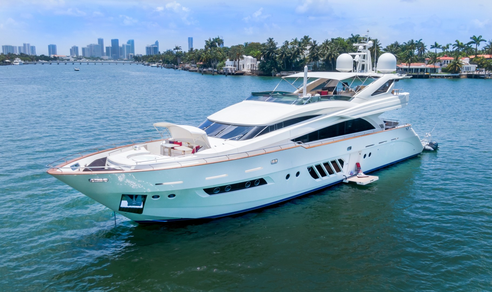

M-800
- Long: 24 meter
- Width: 6 meter
- Deep: 4 meter



Technical Data
| No. | Function Descriptions | Brand Details | Remarks |
|---|---|---|---|
| (1) | Engines Information Motor boats with an outboard engine have a hull that can be completely cleaned in the machine. The same applies to all types of motorboats where the propulsion/propeller protrudes in the stern, such as water jets, surface drives and foldable stern drives. | Improving fuel efficiency Cleaning your boats hull will have an immediate impact on the performance of the boat, improving fuel efficiency and speed | The Wash systems clean most of motorboats and sailboats from 6 meters to 16 meters about (53 feet) |
| (2) | A hand-held pressure washer can be used on the stern to remove dirt if it is accessible. The pre- and post-images below indicate which part of the hull the machine can reach and clean. As there are many hull types and individual differences, the results may vary | 100% ecological A regular cleaning program will keep your boat free of fouling so that environmentally harmful antifouling paints can be reduced. | Drive in, wash, drive out Like for the car, only for the boat. In 15 mints the hull of your boat is clean and you are ready to go |
| (3) | To wash the entire surface of small and medium-sized Boat from 6 meters until 18meter long with TSI 800 Boat Wash System. | Simplify boat maintenance Save yourself the effort of scraping, grinding and painting the boat year after year. No more inhaling harmful substances | The length of the keel must not exceed 2.3 metres from the waterline to the bottom of the keel. |
| (4) | Choose your type of boat and find out if the hull of your boat can be cleaned. | New Brand TSI 890 Also we have new Wash System Equipment will be in Service on 2024. It`s for Boat and Yacht until 48 meters long. | The length of the keel itself must not exceed 1.6 metres (from the bottom of the hull to the bottom of the keel) |